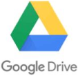

Your everyday storage on the go!
Sto is a Software as a Service (SaaS) cloud storage application that would take advantage of the network effect to get social and attract users. User research indicated the void for a travel easy cloud storage system that would seamlessly integrate between platforms. An intuitive user interface seemed inevitable while designing such a hassle free user experience.
DESIGN ROLES
UX Design
Branding
Visual Design
DELIVERABLES
User Surveys
User Stories
User Personas
User Flows
Competitive Analysis
Sitemap
Branding
Visual Design
Wireframes
Prototypes (low-fidelity
& high-fidelity)
User Testing
TOOLS
Figma
Google Forms
Google Sheets
PROBLEM
Current cloud storage providers take time to sync your data to the cloud and hence create a lag between platforms, for instance when you want to quickly resume work from your laptop to your tablet.
SOLUTION
Optimization: Only the files currently being worked on are active while the other files exist in an archive mode. Also, a simple user interface with no embellishments that quickly loads and intuitively lets the user know where they can find what they are looking for.
Seamless integration: Sto constantly syncs in the background to enable swift switching between platforms making it the perfect storage on the go. It is designed to fit seamlessly into the lives of any busy individual.
What is missing in the current market?
Since there are so many popular cloud storage services currently in the market, the first important step in the design of the app was to research what was missing in the current apps,
• What the pain points are for the current users?
• Is the platform portability as significant in their cloud storage service selection as one would assume?
• The survey aimed to collect information and analyze what good and bad were with the existing apps and what could be better?
• What is the most important factor for the cloud storage selection?
• How important is collaboration features?
• Do you use your current cloud storage service between platforms?
• If so, how important is the seamless integration between them?
• What are some of your frustrations while using these services?
USER SURVEYS
The design process began with the dispersal of a user survey which was aimed to find out the current popular cloud storage service preferred by users, why it was so and what needed to make it better. Further questions explored what were features that would make the existing services better and if they were not cloud storage service users, what would make them jump ship.
User surveys indicated that the trend of cloud storage usage is more than 95%. Hence, there is a great potential market for this service.
Most users used it for their personal needs first, followed by work.
Ease of use was the number one criteria for preference, followed by free space available.
Better UI between various platforms, versioning for collaboration, a method to collect different formats of files were some of the suggestions to fill the gap in the existing services.
COMPETITIVE ANALYSIS
Cloud Storage services have become almost the norm with anyone who uses the internet in modern day. Among the top contenders are Dropbox and Google Drive.
Mainly due to their popularity and the amount of free storage, which is one of the determinants for the choice of cloud service, almost everyone has an account with them. Evernote works similar to a digital filing format to provide its cloud storage service.
Google Drive was the most popular among the users surveyed mainly due to their inbuilt office feature, where the user has the ease toW make documents, slides and spreadsheets as needed. The competitors were further analyzed to realize what worked and what didn’t and what was missing so the cloud storage app being designed could fill that gap.
- 
USER PERSONAS
Upon analysis of the user testing, two main sectors were considered as the main target audience: working professionals who had the need to have cloud storage for work as well as personal life and students who have the need for cloud storage space which provides a platform for collaboration. Both the target audience benefitted from seamless integration on the go as well. Keeping these considerations in mind, two user personas keeping these audience in mind were created and analyzed.
USER STORIES & USER FLOWS
To better understand the most common user flows, the process flows in some of the competitors were drawn out and analyzed. User stories for what a new user, a returning user and admin users would most commonly use the app for were then written out in detail with the ranking of high, medium and low to figure out the requirements for a Minimum Viable Product(MVP). User flows for the basic user stories that would make the MVP were then drawn out to create the foundation for the first round of Wireframes. Some of the user flows drawn out included, but were not limited to, signing up for an account, organizing files within the app and adding a new file/folder.
Onboarding process (New User)
Update password for user (Admin User)
CONTENT STRATEGY, WIREFRAMES & USER TESTING
The next step in the process was writing the content strategy of the website. My intention was to keep it minimalistic and with a clean interface that was intuitive at the same time. The content of the website reflected these elements with graphics that reflected the same.
Following this, a sitemap and basic wireframes were sketched out. The sketching process helped define the abstract ideas and gave form to how the basic interfaces would pan out. Once they were sketched out, they were then converted into low fidelity mockups on Figma. These mockups were used to do an initial round of user testing to see if they were as intuitive as intended. The feedback helped in refining the user interface to have a smoother user flow.

BRANDING
Branding is one of the most important factors to determine the success of a product/service. Minimalistic. Intuitive. These keywords were kept at the forefront while thinking of the branding for the cloud storage service. From the get go, I intended to design the brand identity as something every user can relate to, your everyday portable cloud storage solution, an app for the everyday person on the go. The mood board thus incorporated inspirations of relatable, clean elements with minimalistic features and soothing colors. At the same time, security is an important aspect of any cloud service since the user needs to trust us to store their information. Hence, the color selection was consciously done to include hues of soothing blues and purples, since blue is the color of trust and security.Gradient tones were used to bring a modernistic feel to the design scheme.
The mind map exuded words that included minimalistic, everyday and familiar and the brand identity was founded upon them. Further exploration of ideas led to the name ‘Sto’ which played off the shortened form of the word ‘Storage’ as well as the act of ‘stowing’ away items for future use. Also, the creation of the name came synchronously with the creation of its tagline - ‘Sto, your everyday storage on the go’.
#745AA6
#2F75B5
#1896BE
#4C5A5D
#BBC3C6
#F2F2F2
LOGO & STYLE GUIDE
The mood board and logo led the way to the compilation of the style guide which brought the entire brand together. The color palettes and logo further refined the brand’s buzz words: minimalist and familiar. Whitespace was decided as one of the main design elements to add to the overall elegance of the UI.
The logo typeface was selected to be Advent Pro because the curves of the font complemented the radii of the briefcase in the logo. The main copy font was selected to be Roboto Sans (thin and normal) because this font is familiar as well as easily works between various platforms seamlessly, much like the app.
All the elements in the brand design were consciously designed to bring familiarity to the cloud storage service, right from the name to the color choices. A balance between gaining the users trust and including a modernistic everyday feel was strived for. Sto aims to take the place of that trusted friend that holds all your secrets but is also fun to hang around with.
PREFERENCE TESTING
Before the created of high fidelity prototype, a round of preference testing was done to identity how the audience related to the design scheme and if the design intent was evident in the UI.
Three options for the hero image, two choices for button colors on the landing page and a couple iterations of various color elements in the dashboard UI was tested on both the mobile and desktop platform.
The button color for the second new option with a bluer hue was preferred over the initial teal hue that was designed. The choice was unanimous that it stood out better against the hero image background.
The initial rounds hero image had the most popular vote, although the other choices got some preference too. However, a clear majority liked the feel of the initial hero image with the coffee and laptop because it aligned with the design intent of the brand as well.
The gradient option of the dashboard sidebar was preferred as much as the solid option, if not more. However, I agreed with one user who mentioned that too much gradient is distracting and it would work better with “pops” of gradient versus a “wash” of gradient all over the UI. Hence, I redesigned the dashboard to include a gradient for the “add new” button whilst keeping the sidebar of the dashboard a solid color.
HIGH FIDELITY USER TESTING
Testing the high-fidelity prototypes for the mobile interface further helped refine the user flows in the UI. The detailed high-fidelity UI’s received positive feedback as well.
One of the changes suggested was the different ways to access ‘Settings’. It was pointed out that there were three ways to reach the same page and maybe that was not needed. The feedback was analyzed and two of the three were kept, one as a ‘quick task’ in the bottom bar and one where it is expected, in the sidebar.
Options to view the files in ‘tile’ and ‘list’ view was added since it was asked and expected by users. That element had been not considered in the minimum viable problem initially, but it was added at this stage. Small features like removing buttons that were used less often over buttons that would be used more often (‘delete’ button versus ‘share’ button) was also done.
Desktop UI and Mobile UI prototypes were designed.
Some of the changes done taking into consideration the feedback from user testing before working on the high fidelity prototype are listed below.
Drag and Drop feature was removed from the mobile interface because it wasn’t practical to use it on the mobile platform.

The user flow for ‘Create a new file/folder’ was simplified to include options after the initial process versus during.

The Dashboard UI was streamlined.
The back button, or a method to go to the previous screen was missing in some of the user flows, this was pointed out in the user testing and corrected in the following iterations.
PROTOTYPES
After a round of user testing on the low fidelity prototypes, the feedback was analyzed and the initial round of high fidelity mockups were designed based on the Material Design Principles. The Material Design Principles aligned with the clean, minimal yet familiar design that Sto strived to have.
A Mobile UI working prototype was designed.
This was the very first project where I worked on from conception sketches to branding and a refined high fidelity UI. A lot of valuable lessons were learnt about the design process and the importance of consistent and conscious user testing in each phase to better the product as it evolves. It also introduced me to the world of Material Design Principals which I used to design the high fidelity mockups. It was thoroughly satisfying to see the evolution of the project from an idea to a more refined high fidelity work prototype.
One of the most valuable insights that I learnt during the process was how your design can change for the better from user feedback. As designers, we tend to have a bias towards aspects that we think would work better a certain way. However, the user might not see it that way at all. I believe user testing is a key irreplaceable component is any great user interface and thereby great over user experience.
I am very pleased by how the project has turned out but I think it has potential to be more streamlined and intuitive. If I had more time, I would like to do further user testing and refine some of the user flows to be more efficient from the feedback. Overall, I believe this project had a steep learning curve and honed my skill set to an entire new level.